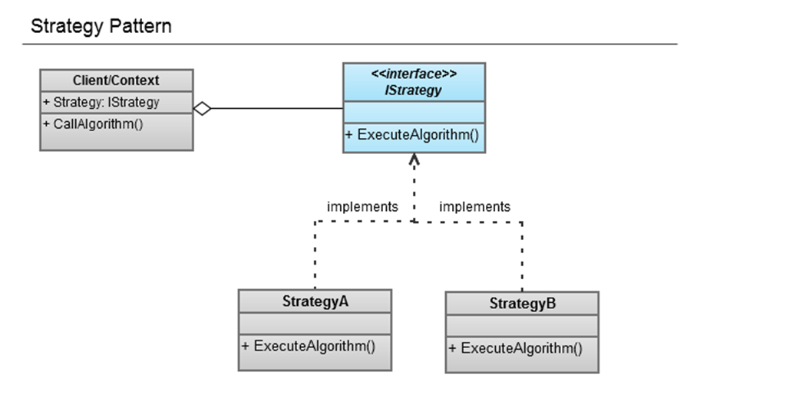

Strategy Pattern
Posted: July 01, 2011 | More posts about Design Patterns OOP programming
Pattern Name
Strategy Pattern
Classification
Behavioral Pattern
Intent
Define a family of algorithms/behaviors, encapsulate each one and make them interchangeable. The Strategy pattern lets the algorithm vary independently from the clients that use it.
Also known as
Policy pattern
Motivation
In some situations, we might find ourselves working with classes that only differ in their behavior. If we use inheritance, we’ll have to override the behavior every time we want to derive a class and want to change the algorithm, but when we want to remove special behaviors we would override them with empty methods because the algorithms are hardwired in the classes. Such rigidity in the implementation breaks an important OO principle, which is flexibility.
Also another approach would be providing an interface for each algorithm, this way only classes that should have this algorithm can implement it; thus, solving some of the first approach's shortcomings. But it will have its own disadvantages like duplicate code . Also, by applying this approach, we can kiss code reuse goodbye since we'll have to write the algorithm in each class. Consequently, the slightest change in the implementation will require us to go over all the classes and change them too. These shortcomings would create and ideal "Maintenance Nightmare".
We can conclude some of the restrictions that prevent us from using any of the previously mentioned approaches, include:
-
Clients vary in complexity; some can be very simple to the point they are have one behavior only, while others might be complicated to support multiple behaviors.
-
If the algorithms are hardwired in the clients, it will be hard to implement new ones or modify the ones that already exist.
The design principles behind the pattern
- Identify the aspects of our application that might vary and is suspected to change in the future and separate (encapsulate) them from the rest of the code. This way when they are changed, the rest of the code won't be affected.
- Program To an interface not to an implementation; the idea here is to exploit polymorphism by programming to a supertype so that the actual runtime object isn't hardwired into the code. This way, behaviors and clients are loosely coupled and clients can use behaviors interchangeably.
Applicability (from GoF's book)
Use the Strategy pattern when:
- Many related classes differ only in their behavior. Strategies provide a way to configure a class with one of many behaviors.
- You need different variants of an algorithm. For example, you might define algorithms reflecting different space/time trade-offs. Strategies can be used when these variants are implemented as a class hierarchy of algorithms [HO87].
- An algorithm uses data that clients shouldn't know about. Use the Strategy pattern to avoid exposing complex, algorithm-specific data structures.
- A class defines many behaviors, and these appear as multiple conditional statements in its operations. Instead of many conditionals, move related conditional branches into their own Strategy class.
Structure

Participants
- IStrategy: The interface common to all algorithms that the client uses to deal with the Strategies (Concrete Algorithms). This interface represents the family of Strategies that share something in common. This interface can be implemented as an abstract class if it has functionality to provide to its children.
- Context/Client: Uses the interchangeable algorithms through the IStrategy interface. It declares a property of the IStrategy type that holds one of the Strategies. This property can be set to the required algorithm in the runtime.
- Strategy A / Strategy B: They implement the IStrategy interface and represent the different implementations of the algorithm.
Consequences
The strategy design pattern splits the behaviors of a class from the class itself, resulting in the following advantages:
- The algorithms/behaviors produced are reusable by other clients since they are no longer hardwired in our classes.
- Clients can chose from various implementations of the same behavior.
- New algorithms/behaviors can be added easily without the need to modify any existing code.
Yet, the strategy design pattern has some draw backs (from GoF's book):
- Clients must be aware of different Strategies. The pattern has a potential drawback in that a client must understand how Strategies differ before it can select the appropriate one. Clients might be exposed to implementation issues. Therefore you should use the Strategy pattern only when the variation in behavior is relevant to clients.
- Communication overhead between Strategy and Context. The Strategy interface is shared by all ConcreteStrategy classes whether the algorithms they implement are trivial or complex. Hence it's likely that some ConcreteStrategies won't use all the information passed to them through this interface; simple ConcreteStrategies may use none of it! That means there will be times when the context creates and initializes parameters that never get used. If this is an issue, then you'll need tighter coupling between Strategy and Context.
- Increased number of objects. Strategies increase the number of objects in an application.
Implementation
public interface IStrategy { string ExecuteAlgorithm(); } public class ConcreteStrategyA : IStrategy { public string ExecuteAlgorithm() { return "This is Concrete Strategy A"; } } public class ConcreteStrategyB : IStrategy { public string ExecuteAlgorithm(); { return "This is Concrete Strategy B"; } } public class Client { public IStrategy Strategy { get; set; } public void CallAlgorithm() { Console.WriteLine(Strategy.ExecuteAlgorithm()); } }
Sample Code
We are writing a game that contains different types of terrains(e.g. Marshes, Dessert, City & Coasts) and different types of characters (e.g. Warrior, Mage & Rogue). We want every character to pass the terrain with a relative speed to their type and difficulty of the terrain.
We’ll refer to the terrains difficulty with integers to keep things simple. Also, we’ll add algorithms to calculate time taken which take in consideration the distance covered, terrain difficulty and character type.
Class Diagram

Timer’s implementations
public interface ITimer { double CalculateTimeTaken(double distance, int terrainRate); } public class RogueTimer: ITimer { double CalculateTimeTaken(double distance, int terrainRate) { double timeTaken; //Implementation of Timer return timeTaken; } } public class MageTimer: ITimer { double CalculateTimeTaken(double distance, int terrainRate) { double timeTaken; //Implementation of Timer return timeTaken; } } public class WarriorTimer: ITimer { double CalculateTimeTaken(double distance, int terrainRate) { double timeTaken; //Implementation of Timer return timeTaken; } }
Characters’ implementations
public abstract class Character { public ITimer Timer { get; set; } private Health; public abstract double CalculateTimeTaken(double distance, int terrainRate); } public class Warrior : Character { private Stamina; private Strength; public Warrior() { // Constructor code here } public override double CalculateTimeTaken(double distance, int terrainRate) { return Timer.CalculateTimeTaken(distance, terrainRate); } } public class Mage : Character { private Mana; private WillPower; public Mage() { // Constructor code here } public override double CalculateTimeTaken(double distance, int terrainRate) { return Timer.CalculateTimeTaken(distance, terrainRate); } } public class Rogue: Character { private Dexterity; private Constitution; public Rogue() { // Constructor code here } public override double CalculateTimeTaken(double distance, int terrainRate) { return Timer.CalculateTimeTaken(distance, terrainRate); } }
Testing Code
Warrior warrior = new Warrior(); Mage mage = new Mage(); Rogue rogue = new Rogue(); warrior.Timer = new WarriorTimer(); mage.Timer = new MageTimer(); rogue.Timer = new RogueTimer(); Console.Write("Warrior's Time: "); Console.WriteLine(warrior.CalculateTimeTaken(50, 3); Console.WriteLine("Mage's Time: "); Console.WriteLine(mage.CalculateTimeTaken(50, 3); Console.WriteLine("Rogue's Time: "); Console.WriteLine(rogue.CalculateTimeTaken(50, 3);
Related Patterns
Flyweight Pattern
comments powered by Disqus